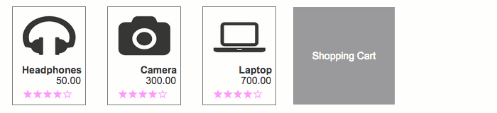
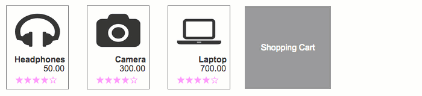

在 8.x 版本中，隐藏条目中的部件时不会再影响该条目的显示尺寸了。如果你在Axure 8 中打开 7.x版创建的文档，将按此改进更新文档。如果你希望保留由隐藏部件定义的条目尺寸大小，可以添加一个热区部件到该中继器条目中。
当选中中继器部件的“适应Html内容”属性项时，中继器的条目尺寸大小将随着该条目其中的部件的显示、隐藏和移动变化自动改变。该“适应Html内容”属性项可以在选中某个中继器部件后，在其检查器面板的属性tab中找到。
中继器部件新增了一个条目尺寸变更事件（OnItemResize），可以用来响应中继器条目（以及中继器部件本身）的尺寸变化操作。例如：可以根据需要调用“移动”操作来移动页面上得其他部件。（译注：如下图中，中继器条目尺寸变化，动态移动中继器后面的灰色矩形块）